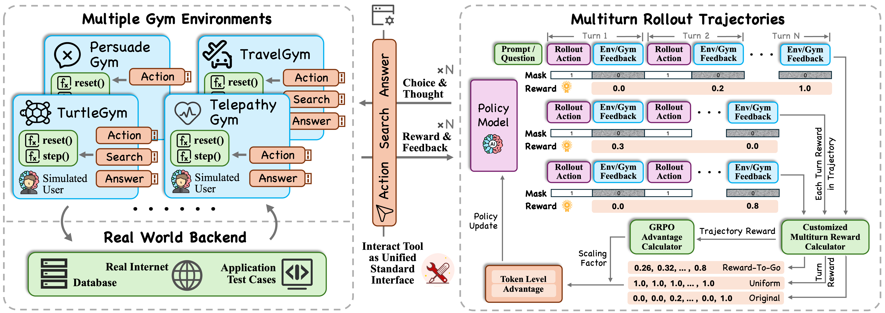
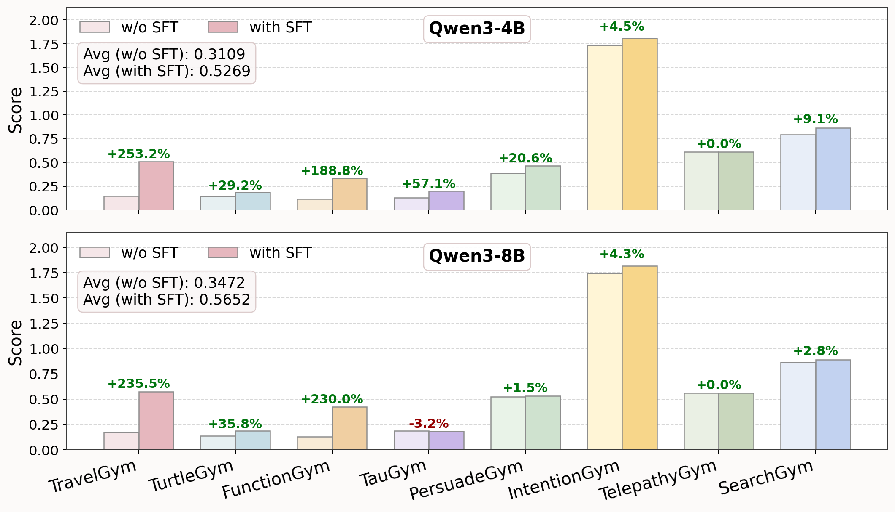

核心判断：UserRL 用 Travel、Turtle、Function、Tau 等 Gym 统一训练多轮用户交互 agent，并比较 trajectory-level 与 turn-level 奖励。结论是先用 SFT 学会工具格式和基本交互，再做 RL，整体比直接 RL 更稳定。
问题与动机
用户偏好、澄清和工具调用跨多个 turn，整条轨迹奖励过于稀疏，且不同 Gym 的奖励量纲并不一致。
方法框架
- 用多个 Gym 和用户模拟器产生多轮 rollout，分别计算轨迹得分与每轮 reward。
- 比较 Equalized、EM、Sum 和 R2G 等 credit 设计，并用 Qwen3-32B/GPT-4o 作为训练/评估用户。
- 采用 SFT→RL 冷启动，保留最终效果、有效轮数和 time-weighted performance。
实验与核心结论
- 8B Equalized/R2G 的综合分为 0.5652，4B 为 0.5269；对应 Equalized/Sum 为 0.5076/0.4656。
- SFT+RL 相比直接 RL，4B Avg 从 0.3109 提升到 0.5269，8B 从 0.3472 提升到 0.5652。
- 增益并非每个 Gym 单调提高，整体分数还受 Travel 题量和 simulator 分布影响。
UserRL 训练框架

SFT 冷启动结果

价值与边界
工作展示了多环境 user-centric RL 的工程配方，但不能把混合 Avg 当作统一成功率，也不能把所有增益都归因于 RL；SFT-only 和更真实用户仍需独立对照。